My Favorite Things 2023 Edition
This is a list of things I like! I wrote all this in mid 2023 when I made this site, so things may have changed since. I'll try to update future pages when I play and enjoy more things! Go ahead and click some buttons and explore.
Games:
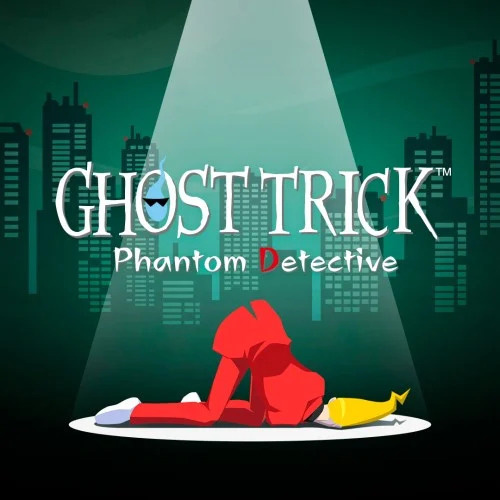
Ghost Trick: Phantom Detective
If you know anyone who has played Ghost Trick, then you have probably heard them reccomend that you play it, while also telling you as little about the game as possible. There is a reason for this. This game is best experienced blind and is more than worth it for any fan of well-written, silly stories with great plot twists.
Highlight: Chapter 16
Undertale & Deltarune
I'd find it quite hard to encapsulate what these games mean to me, and for this reason I had to group them together. After all, there isn't any other piece of media that I have so obsessively consumed nearly every detail of, through years of watching cut content videos, fan theories, and listneing to song remixes.
Highlight: The Spamton Sweepstakes
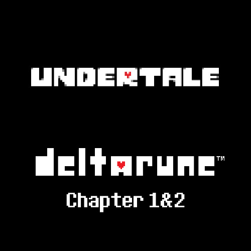
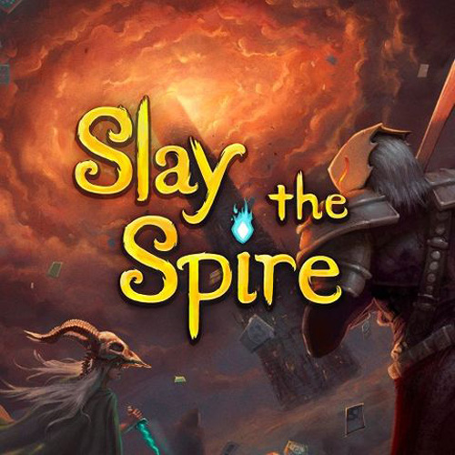
Slay the Spire
If you combine my time in the mobile version and my time playing... offline versions of this game, then it may be the game I've spent the second-most amount of time playing (If you don't count the time I left TF2 open while on holiday). That being said, I'm also still very bad at it, since I tend to play based on muscle memory more than rational thought at this point, which is not good for this kind of game.
The Binding of Isaac: Rebirth (+DLC)
After writing the description for Slay the Spire, I found out I was totally wrong about playtime; considering my hours in TBOI's Switch version sit at about 815, which reaches 1000 once you add the Steam version. Something about this game plugs directly into how my brain is wired, and yet I still can't get a positive win streak...
Highlight: Dogma / The Beast
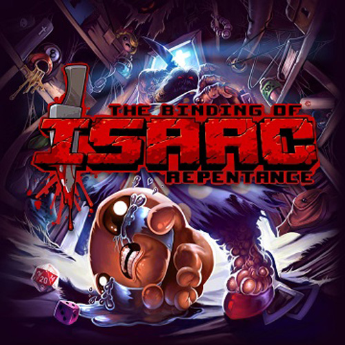
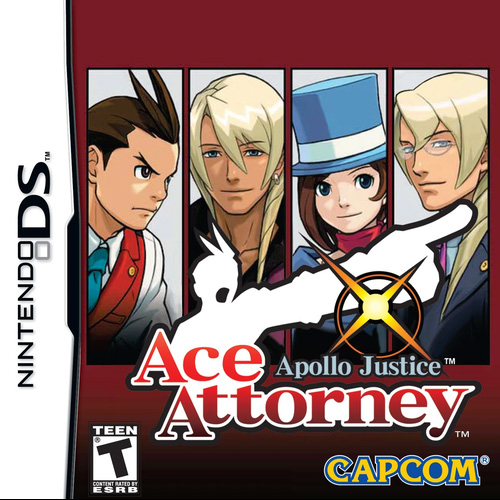
Apollo Justice: Ace Attorney
I had to choose at least one representative of the AA series here, since it's one of my major brainrots, so I chose this one because I like it's vibes the most. If you asked me which games were the best in the series, I'd say the original trilogy (which everyone says), The Great AA Chronichles, and probably the Investigations 2 Fan Translation.
Highlight: Turnabout Trump
Minecraft
I'm almost glad that there isn't a way to track time spend playing Minecraft. At this point, I've pretty much got the base rules memorised, played and abanonded hundreds of different worlds, and installed countless mods. If I had to put a number on how many hours I've played since I first got an account for christmas in 2013, I would put in in the upper 2000's. And I wouldn't trade away a second of it.
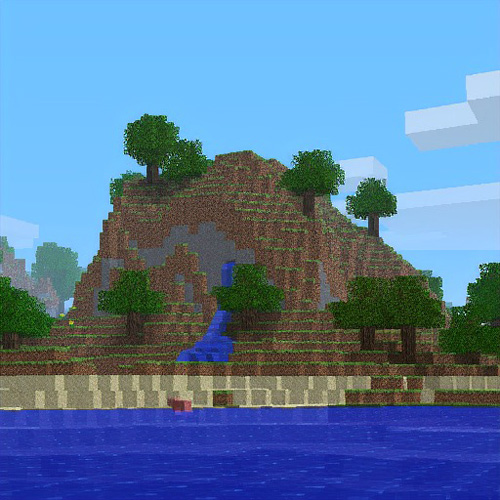
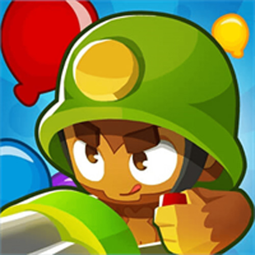
Bloons TD6
I have a complicated relationship with this game. Despite having a nostalgic history with the series going back to Bloons TD3, an admiration for it's kiwi developers, and this somehow being my second most played game on steam, I don't really... like it that much? Sure it's mostly well designed, pretty fun, and has some solid replay value to boot, but I don't feel as strong of a connetion to this as I do other games.
OneShot
I finally got around to playing this game only this year, and I can honestly say it was one of my favorite video game experiences ever. I can't imagine what it must've been like to play before the soltice update... Either way, a fantastic experience that really kept me thinking. I will keep the leftover *spoiler*s in my computer forever.
Highlight: When *spoiler* walks off of the *spoiler*

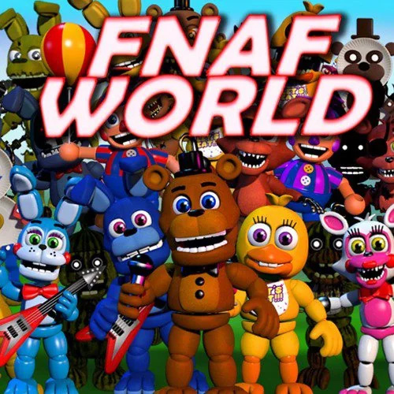
Five Nights at Freddies (Series)
This is an odd choice (especially since I haven't played any games in the series), since most of it's content... isn't that well constrcuted? Something about it's insane, obscure-for-the-purpose-of-obscurity story compells me. Almost to the point that it makes me want to try and piece it together myself, and you know that would be a bad idea.
Highlight: Henry's Speech in FFPS
Neon White
It took me a while to pick this game up, but when I did, it was absolutely worth it. It's soundtrack is amazing, the levels/environments are beautiful, the characters are... not much better than they need to be to make the rest of it work, but that doesn't put the game at a detriment at all. It's an anime parkour game, what more do you want?
Highlight: The opening levels

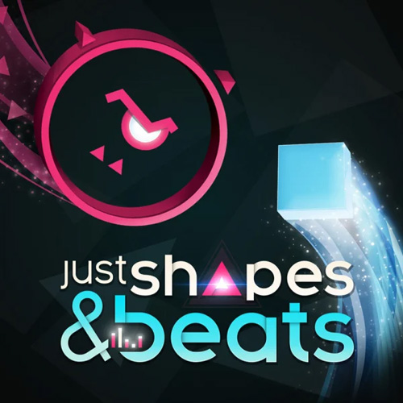
Just Shapes and Beats
This game gets a shout from me not just for it's banging soundtrack collection which has occupied my ears for many a time, but also for it's wonderful use of dialouge-free storytelling. It's simple, it's charming, it tells a little story, and it's got some great songs to jam to!
Highlight: Close to Me
Honorable Mentions:
Team Fortress 2, Everhood, Inscryption, The Forgotten City, Overwatch but in 2017 when it was good, Portal and Portal 2, Psychonauts and Psychonauts 2, Battleblock Theater, Castle Crashers, Pit People, Dicey Dungeons, FTL: Faster Than Light, Plants vs Zombies, Deep Rock Galactic, Loop Hero, World of Goo and Little Inferno, Sonic and All Stars Racing Transformed, Garry's Mod, Hades, Monster Train, Super Mario Oddysey, Shovel Knight, No Straight Roads, Cuphead, Every Crash Bandicoot game except for the party ones, and Pokemon Shield.
Albums:
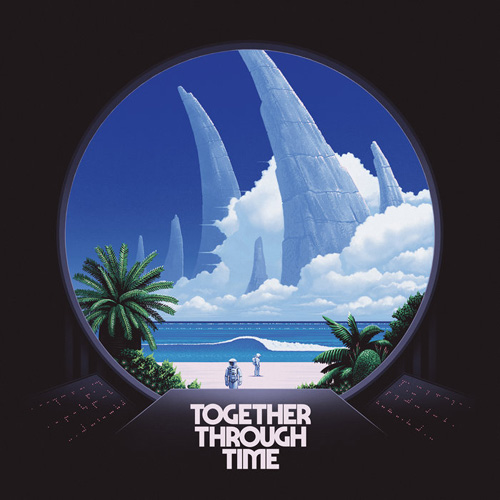
Together Through Time - TWRP
I adore this album, it's been a classic for me pretty much since it's release in 2018. It's wonderfully whimsical but still has a couple hard bangers in there to pump it up, namely Phantom Racer and Starlight Bridagade. I love TWRP a whole lot, but this has to be my favorite album of theirs.
Highlight: Starlight Brigade
Yes - Pet Shop Boys
My love of the hits of Pet Shop Boys was essentially passed down to me from my dad, and their wacky music videos make up some of my earliest memories. (looking at you, Go West, Can You Forgive Her, and Yesterday When I Was Mad). Out of all of their albums, I think this contains most of my favorite songs.
Highlight: Beautiful People
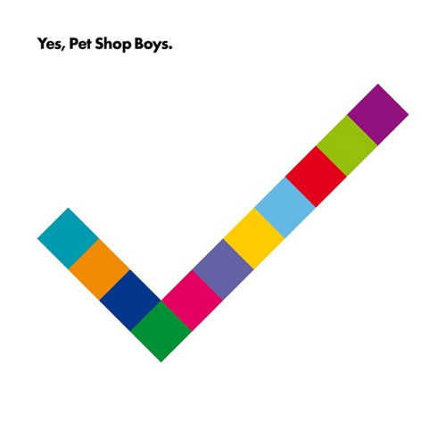
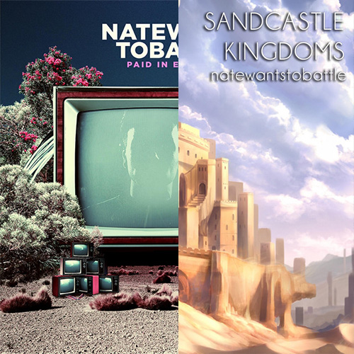
Sandcastle Kingdoms & Paid in Exposure - NateWantsToBattle
These two albums take up a similar space in my brain, so I merged them. Most of NWTB's other music doesn't really fit in my wheelhouse, but these two albums really clicked with me. I enjoy their almost personal tone, and I hope he makes more in the future.
Highlight: Dream Alone
Mercurial World - Magdenila Bay
I'm an older sibling, and anybody else who is also an older sibling knows that it's a deathy sin to acknolwedge that you like something your younger sibling also likes, let alone something they introduced to you. On an unrelated note, I love this album.
Highlight: You Lose!
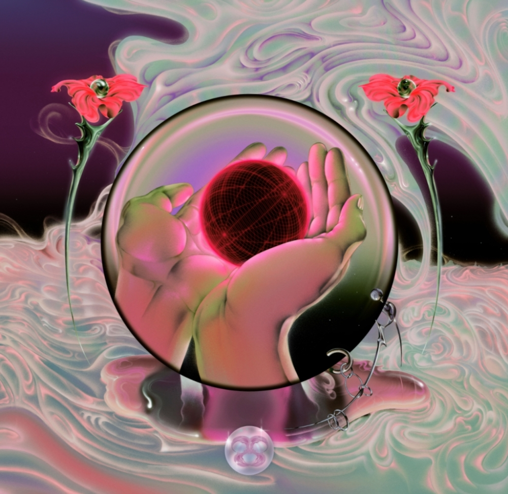
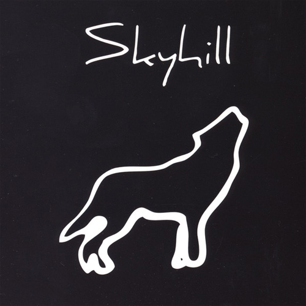
Run with the Hunted - Skyhill
I discovered this album by virtue of being a Game Grumps fan at one point in the past, and have always enjoyed putting it on whenever the particular mood strikes me. I don't have much more to say about it, so I'd like to mention now that it's annoying that the cover looks off centre.
Highlight: Only One
Ember - Kubbi
This is one of those albums I just kinda vibe with. you know? you put it on and you're like... yeah, this vibes. it has those vibes to it.
Highlight: has good vibes
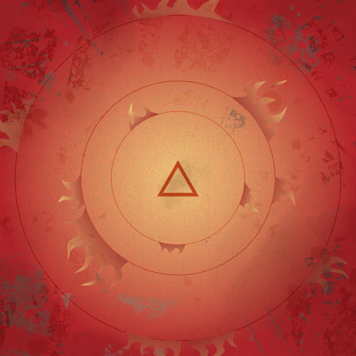
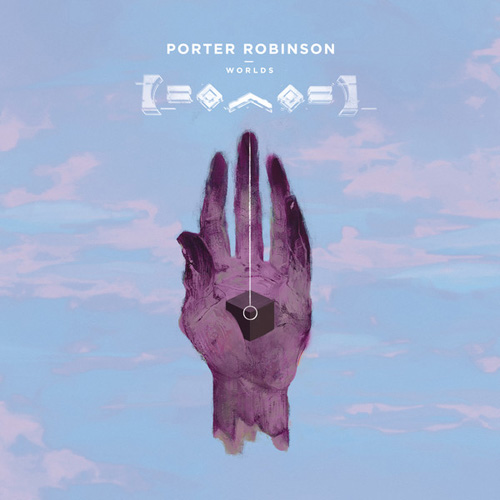
Worlds - Porter Robinson
Given how divorced I am from... other people, I'm not sure what the popular consensus is on this album. Is it... Overplayed? Overrated? Obscure? I'm not sure how people feel. But seperate from the wider opinion of the populus (which is how I feel most things should be enjoyed, especially when it comes to terms like "normie" and "overrated"), I enjoy this album.
Highlight: Years of War
Chiptune Memories - she
On the topic of albums I'm not sure how people feel about, Chiptune Memories. I came across this album by chance on a Spotify reccomendation, and it's slowly wormed it's way into becoming a staple, for good reason. Aspire is another favorite she album of mine.
Highlight: Artificial Love
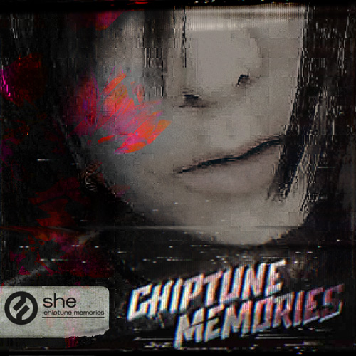
Honorable Mentions:
And The Flying Boombox by No More Kings, Woman Worldwide by Justice, Cool Patrol by Ninja Sex Party (the first album I ever got on CD), Demon Days by Gorillaz
Game OSTs:
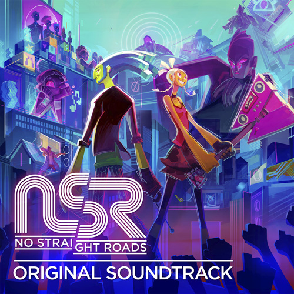
No Straight Roads
It's hard to state just how much I love the music from NSR. I was a little take it or leave it on the game itself (has wonderful potential, but isn't quite as good as it could be), but man does this soundtrack rock ass. I'm a sucker for great boss tracks with personality, and this delivers so much on that.
Highlight: vs. SAYU
Everhood
On the topic of boss themes that Rock Ass, Everhood. I didn't really know what to expect when I first played this game, but banging tunes and existentialism weren't on that list. I don't know how they managed to jam so many great tracks into this one game. Listening to Euthanasia Rollercoaster & Farewell still makes me tear up.
Highlight: Frogs are Friends 2
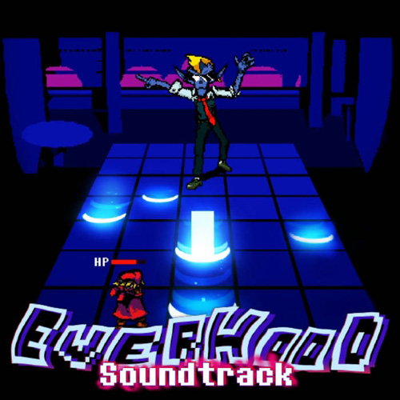
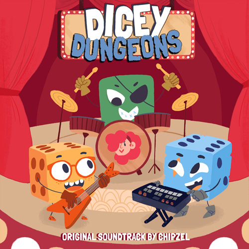
Dicey Dungeons
I checked out Dicey Dungeons by virtue of being a Slay the Spire fan, but I think I came out of it more of a fan of it's music than it's gameplay, though they're both spectacular. Chipzel is a musical wizard, and I believe the music for Dicey Dungeons only got better as time went on. I'm super excited to see what she cooks up next.
Highlight: Halloween Combat 2 (I don't think it's named)
Ghost Trick: Phantom Detective
Just as Ghost Trick's humour, gameplay and writing stand out as excellent, so too does it's music. I'm not exactly fluent in music language, so I couldn't tell you why, so just listen to this track. You'll get it. (maybe turn down the volume a bit first)
Highlight: Lynne - A Targeted Redhead
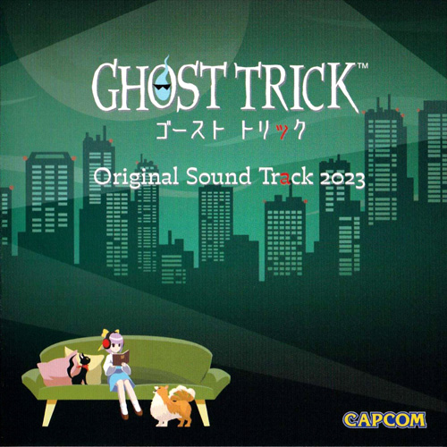
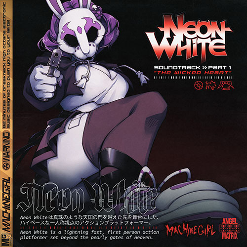
Neon White
I cannot emphasize how daunting of a task it would be to match Neon White's unique gameplay and presentational style with a soundtrack, but Machine Girl knocked it out of the park and into outer space. The tracks are phenominal.
Highlight: Glass Ocean
Apollo Justice: Ace Attorney
As well as being my favorite Ace Attorney game of the series, it also gets the favorite soundtrack award. Though once again, it almost loses that title to Ace Attorney Investigations 2 (why does that damned *spoiler* have to have a theme that goes so hard)
Highlight: All of it's investigation themes, hot damn
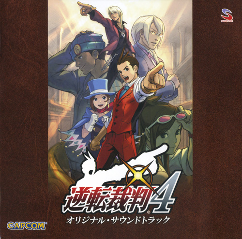
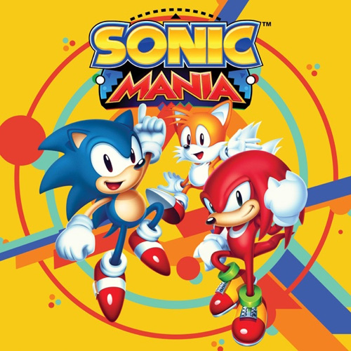
Sonic Mania
I don't think I've ever beaten a Sonic game, but you don't need to have played one to be able to realise how much this soundtrack jams. One day I'll get around to playing them all, but in the mean time I will continue to undulate to these magnificent tunes.
Highlight: Stardust Speedway
Undertale & Deltarune
I can't belive I've gotten this far down the list without mentioning these musical staples anyone's list of favorite game OSTs is likely to include, and for good reason. I've listened to these songs so many times their metaphorical cassete tape has been worn to dust. 10/10, can't wait for chapters 3 onwards.
Highlight: THE WORLD REVOLVING
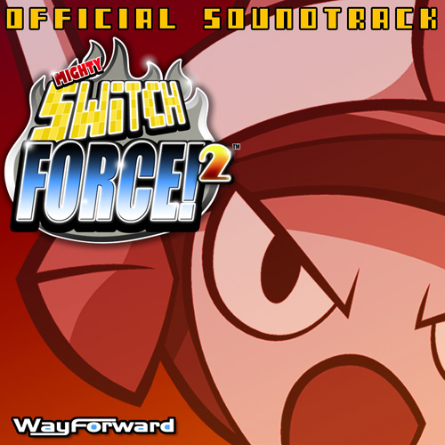
Mighty Switch Force! 2
I think this might be one of the lesser known picks on this list, but it also might be one of my favorites. I feel lucky to have heard this song on a livestream somewhere many years ago, so that I may be blessed with these funky jams. Also I learned while putting my music collection together that the artist for these songs, Jake Kaufman, went on to create the music for Shovel Knight!
Highlight: The Afterblaze
Splatoon 3
Oddly enough, I purchased Splatoon 3 on launch, only to then sell it after little playtime. Regardless of how bad I am at the game itself, Splatoon 3 is locked in eternal battle with Neon White in my mind for best Soundtrack of 2022.
Highlight: Till Depth Do Us Part
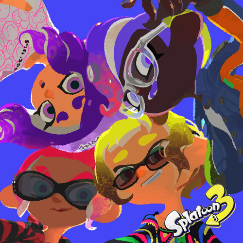
Honorable Mentions:
Everything else from Ace Attorney, OneShot, Minecraft, Holocure, Pokemon Sw/Sh, Hades, Crash of the Titans, Plants vs. Zombies, Sonic CD, Psychonauts 2, The Binding of Isaac: Antibirth, Yakuza 0, Sonic Frontiers, Rhythm Heaven, Team Fortress 2, Super Mario Odyssey, Crash Bandicoot 4, Kingdom Hearts (series)
Compilation Albums:
I wanted to keep these seperate, since they don't exactly feel like soundtracks or regular albums, per se.
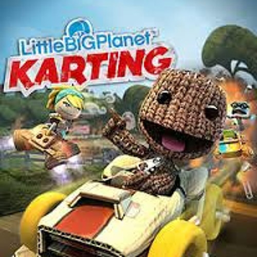
Little Big Planet: Karting
This may seem like an odd choice, but the LitteBigPlanet games were quite formative to my early gaming experience, as too was it's music. I chose Karting especially, since I really ended up liking a lot more of the tracks here than I expected upon revist.
Highlight: Fresh
Just Shapes and Beats
This had to show up somewhere in this list, since these songs have occupied and fuelled a part of my music taste ever since I saw snippets of that one boss fight compilation video on youtube. They've also served as somewhat of a gateway drug to Monstercat and other adjacent songs, so there's that.
Highlight: New Game
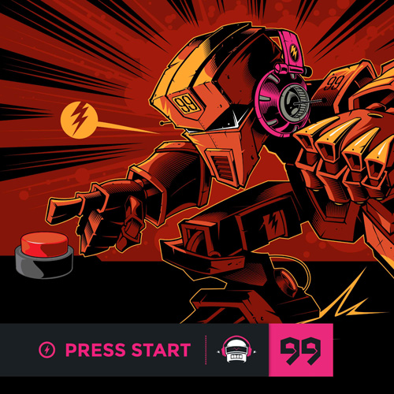
Album 99: Press Start
Back in the high school days, I was a fan of Ninety9Lives, after they were spearheaded by some minecraft youtube guy. Thusly I have a lot of nostalgia for early 99L, pretty much everything up to Album 89. The nostalgia really hits storngest with this album, and Ascend in particular really gut punches me back...
Highlights: Ascend, Into the Night
Mouth Moods
Is this the right place to put this album? I don't even know how to place it. But this album, and the other three Mouth albums, are a real treat to listen to if you haven't before. As someone who isn't very well musically rounded, I heard a lot of songs in these albums for the first time, which made it odd to hear the originals...
Highlight: Wallspin
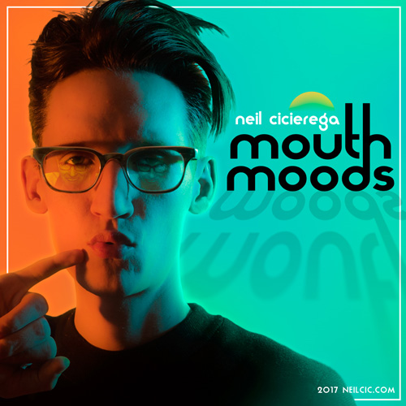
AHA! You FOOL! You've Fallen Into My Trap!!
This isn't a list of my favorite design styles at all!! This is an appreciation zone for the one design style to rule them all, the apex asthetic, and that is:
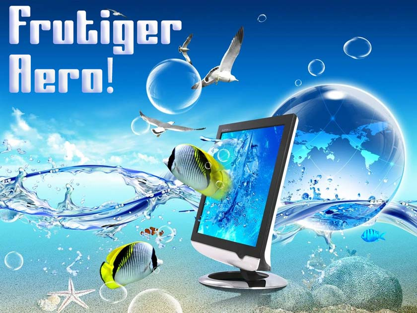
Image sourced from Asthetics Wiki
Frutiger Aero and it's asthetical cousin, the Y2K asthetic, are personal fascinations/nostalgia objects of mine. No wonder, given F.A. being particularly present when I was growing up. Something about the abstract areas, show-offy High Definitions, and illogical futuristic spaces tickle my brain.
Frutiger Aero to tickle your brain:
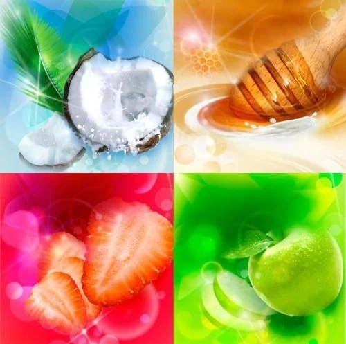
Images sourced from fruitigeraero.tumblr.com
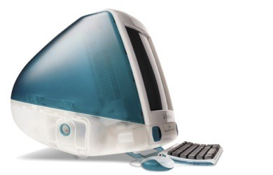
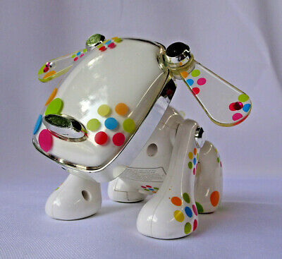
We had these growing up!! love that transparent plastic look
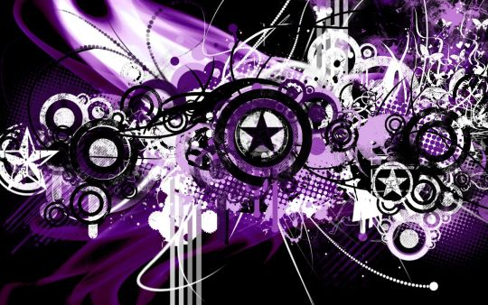
This is from a branch style called "Frutiger Metro", and I mean wow. Love it.
Sourced from fruitiermetrostation.tumblr.com